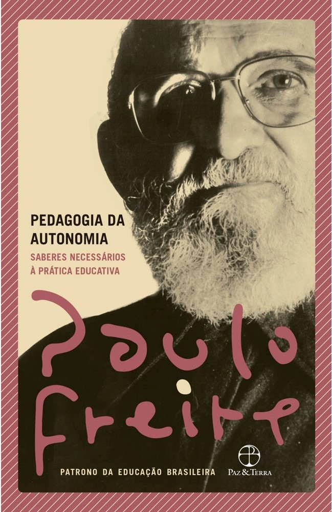

Pedagogia do oprimido
Uma das obras mais conhecidas de Paulo Freire, o livro propõe uma nova visão de relacionamento entre o professor e o aluno
VER MAIS..

Pedagogia da autonomia
A ultima obra publicada em vida por Paulo Freire, oferecendo propostas praticas pedagogicas para o ensino
VER MAIS..
Educação e atualidade brasileira
Primeira obra publicada de Paulo Freire, onde ele apresenta diversas ideias que serão posteriormente abordadas em seus futuros livros
VER MAIS..
Direitos humanos e educação libertadora: Gestão democrática da educação pública na cidade de São Paulo
Compilado de frases e citações de Paulo Freire buscando trazer uma nova visão a temas abordados pelo mesmo
VER MAIS..
A educação na cidade
Coletanea de entrevistas a Paulo Freire após ter assumido a secretária municipal de educação de São Paulo
VER MAIS..

Pedagogia da esperança: um reencontro com a Pedagogia do oprimido
Retomada de temas abordados em Pedagogia do oprimido, assim como algumas de suas considerações e supições para o futuro
VER MAIS..